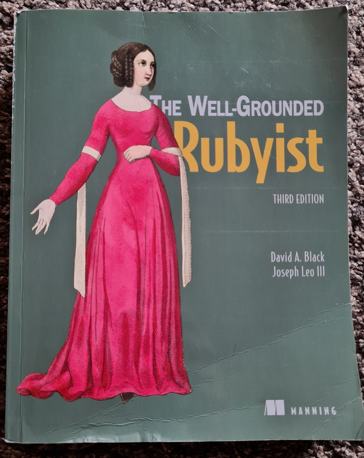

Key Takeaways from The Well-Grounded Rubyist
Published at 2025-10-11T15:25:14+03:00
Some time ago, I wrote about my journey into Ruby and how "The Well-Grounded Rubyist" helped me to get a better understanding of the language. I took a lot of notes while reading the book, and I think it's time to share some of them. This is not a comprehensive review, but rather a collection of interesting tidbits and concepts that stuck with me.
Table of Contents
My first post about the book.

The Object Model
Ruby's object model is the part I found most interesting. The book explains it well.
Everything is an object (almost)
In Ruby, most things are objects. This includes numbers, strings, and even classes themselves. This has some interesting consequences. For example, you can't use i++ like in C or Java. Integers are immutable objects. 1 is always the same object. 1 + 1 returns a new object, 2.
The self keyword
There is always a current object, self. If you call a method without an explicit receiver, it's called on self. For example, puts "hello" is actually self.puts "hello".
# At the top level, self is the main object
p self
# => main
p self.class
# => Object
def foo
# Inside a method, self is the object that received the call
p self
end
foo
# => main
Singleton Methods
You can add methods to individual objects. These are called singleton methods.
obj = "a string"
def obj.shout
self.upcase + "!"
end
p obj.shout
# => "A STRING!"
obj2 = "another string"
# obj2.shout would raise a NoMethodError
shout only exists on obj.
Classes are Objects
Classes themselves are objects, instances of the Class class. This means you can create classes dynamically.
MyClass = Class.new do
def say_hello
puts "Hello from a dynamically created class!"
end
end
instance = MyClass.new
instance.say_hello
# => Hello from a dynamically created class!
That's what the class keyword does behind the scenes.
Control Flow and Methods
The book clarified many things about how methods and control flow work in Ruby.
case and the === operator
The case statement is more powerful than I thought. It uses the === (threequals or case equality) operator for comparison, not ==. Different classes can implement === in their own way.
# For ranges, it checks for inclusion
p (1..5) === 3 # => true
# For classes, it checks if the object is an instance of the class
p String === "hello" # => true
# For regexes, it checks for a match
p /llo/ === "hello" # => true
def check(value)
case value
when String
"It's a string"
when (1..10)
"It's a number between 1 and 10"
else
"Something else"
end
end
p check(5) # => "It's a number between 1 and 10"
Blocks and yield
Blocks are everywhere in Ruby. yield calls the block that was passed to the method.
def my_iterator
puts "Entering the method"
yield
puts "Back in the method"
yield
end
my_iterator { puts "Inside the block" }
# Entering the method
# Inside the block
# Back in the method
# Inside the block
yield can also take arguments and return the block's value:
def with_return
result = yield(5)
puts "The block returned #{result}"
end
with_return { |n| n * 2 }
# => The block returned 10
Fun with Data Types
Symbols
Symbols are like immutable strings. They are great for keys in hashes because they are unique and memory-efficient.
# Two strings with the same content are different objects
p "foo".object_id
p "foo".object_id
# Two symbols with the same content are the same object
p :foo.object_id
p :foo.object_id
# Modern hash syntax uses symbols as keys
my_hash = { name: "Paul", language: "Ruby" }
p my_hash[:name] # => "Paul"
Arrays and Hashes
%w and %i are handy shortcuts for arrays of strings and symbols.
# Array of strings
p %w[one two three]
# => ["one", "two", "three"]
# Array of symbols
p %i[one two three]
# => [:one, :two, :three]
values_at fetches several elements at once:
arr = [10, 20, 30, 40, 50]
p arr.values_at(0, 2, 4)
# => [10, 30, 50]
hash = { a: 1, b: 2, c: 3 }
p hash.values_at(:a, :c)
# => [1, 3]
Final Thoughts
These are just a few of the many things I learned from "The Well-Grounded Rubyist". If you write Ruby, read it. Meanwhile, I also read the book "Programming Ruby 3.3", just I didn't have time to process my notes there yet.
E-Mail your comments to paul@nospam.buetow.org :-)
Other Ruby-related posts:
2026-03-02 RCM: The Ruby Configuration Management DSL
2025-10-11 Key Takeaways from The Well-Grounded Rubyist (You are currently reading this)
2021-07-04 The Well-Grounded Rubyist
Back to the main site